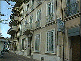

|
 パニョルの生家
|
エクス・アン・プロヴァンス郊外の小さな町、オーバーニュはフランスの国民的小説家、映画監督マルセル・パニョルの生地として有名である。 パニョルの自伝「少年時代」はイヴ・ロベール監督によって「マルセルの夏」「マルセルのお城」として映画化され、日本でも公開されたのでご存知の方も多いと思う。 町の中心は整備された公園があり、公園内には「マルセル・パニョルの小世界」という文学館的な建物がある。年表や写真とともに、パニョルの小説の世界をサントン人形で表現した展示がある。 サントンはプロヴァンスのクリスマスに飾るテラコッタの人形だが、オーヴァーニュはその産地で陶芸工房がいくつもある。 「丘の水」二部作「フロレット家のジャン」「泉のマノン」もまた映画化され日本でも公開された（邦題「愛と宿命の泉」、主演はイヴ・モンタン、エマニュエル・ベアール）。 パニョルファンにはMacromedia製のCD-ROM（ハイブリッド版）がおすすめ。わたし達はパリのFnacで購入したが、パッケージをみるとオーヴァーニュの町も協力しているので、ここでも売っていたのかもしれない。 |